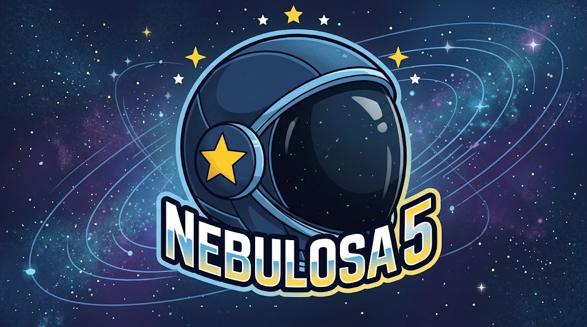
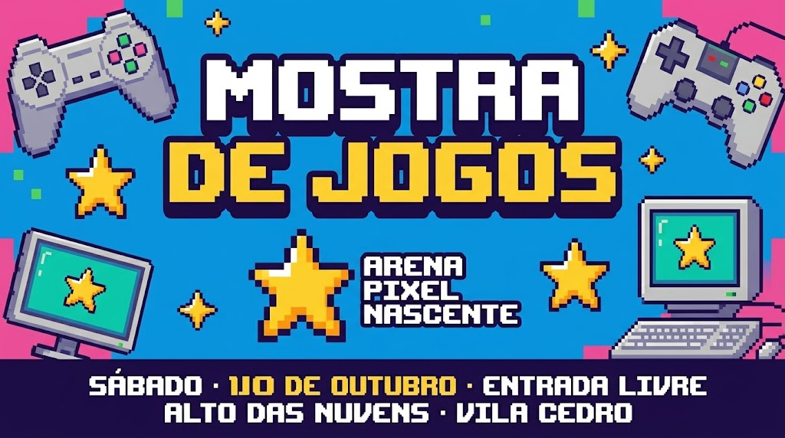

Fixado
Finalmente terminei nosso emblema. Kyo na arte, Nebulosa 5 nas partidas. Próxima versão vai ter mais estrelas

18h30
5 publicações
@KyoNebula17
Rabiscos, jogo em equipe e trilhas sonoras. Vila Cedro.
Fixado
Finalmente terminei nosso emblema. Kyo na arte, Nebulosa 5 nas partidas. Próxima versão vai ter mais estrelas

18h30
Terças e quintas, 20h: nossa hora de jogar Orbital Clash. Hoje vou tentar lembrar de carregar o controle antes
18h15
Kyo comentou uma publicação
A turma da Nebulosa 5 quer passar lá. Gostei do mural quando fui com o pessoal esta semana.
Mostra de jogos da Arena Pixel Nascente neste sábado. Entrada livre.

11h25
Ontem fiz 17. Melhor parte foi ver a galera reunida e ainda sobrou bolo
10h08
Em resposta a @davi.moura.vc
Ainda quero revanche naquele jogo.
Combinado, primo! Mas dessa vez o Bruno joga no meu time
12h06